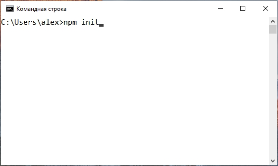

Это подробное руководство по препроцессору Sass для начинающих. Здесь мы познакомимся с препроцессором Sass, его преимуществами, синтаксисом и рассмотрим возможности использования на примерах.

Все примеры и настроенный проект данного урока вы можете Скачать
Sass - это один из наиболее развитых и стабильных CSS препроцессоров, а также один из самых популярных препроцессоров у профессионалов.
Преимущества Sass
- Совместимость с различными версиями CSS, благодаря которой вы можете использовать любые CSS библиотеки в вашем проекте;
- Огромное количество разнообразных функций на любой случай жизни. Таким богатым функционалом могут похвастаться немногие CSS препроцессоры;
- Sass - это один из самых старых CSS препроцессоров, вобравший большой опыт за долгие годы своего существования;
- Замечательная возможность использовать Sass фреймворки, упрощающие жизнь разработчику. Один из таких фреймворков - Bourbon, который мы используем в некоторых выпусках Джедая верстки при написании Sass;
- Синтаксис. Вы можете выбрать один из двух синтаксисов, который вам ближе - упрощенный (SASS) и развернутый CSS-подобный (SCSS).
Когда я только знакомился с CSS препроцессорами, мне, как и многим другим начинающим веб-разработчикам, была не до конца понятна сама идея использования CSS препроцессоров. Зачем делать дополнительную прослойку, использовать какие-то инструменты, усложнять CSS, думал я. Но со временем начал понимать, что изо дня в день написание CSS становилось пыткой, серой рутиной, многие действия приходилось повторять, копировать селекторы, свойства и даже целые блоки CSS кода для достижения необходимого результата. Сегодня, на примерах, я покажу вам, как можно упростить работу, используя препроцессор Sass, разнообразить разработку и даже немного поразвлечься при написании каких-то более или менее сложных функций.
Настройка окружения
В качестве окружения для работы с Sass в этом уроке, как и в других наших уроках, мы будем использовать версию Sass для таск-менеджера Gulp (gulp-sass). Для использования оригинальной Ruby версии или компиляции Sass посредством специального ПО, вы можете ознакомиться с инструкциями на оф. сайте. Данный урок носит преимущественно практический характер, поэтому останавливаться на возможных вариантах подключения к проекту не будем, подключим Sass наиболее популярным способом, используя Gulp.
Убедитесь, что у вас установлена последняя версия Node.js и Gulp. Если Node.js не установлен, скачайте его и установите. После установки Node.js установите gulp командой "npm i -g gulp" (Windows) или "sudo npm i -g gulp" (Linux, OS X). Почитать: Подробное руководство Gulp.
В папке вашего проекта выполните команду npm init и заполните пошагово информацию о вашем новом проекте. Пример, также, есть на странице руководства Gulp.
Далее установим в проект пакеты gulp, sass и gulp-sass командой:
npm i --save-dev gulp sass gulp-sassДалее в папке проекта создадим gulpfile.js следующего содержания:
var gulp = require('gulp'), // Подключаем Gulp
sass = require('gulp-sass')(require('sass')); // Подключаем Sass пакет
gulp.task('sass', function() { // Создаем таск "sass"
return gulp.src(['sass/**/*.sass', 'sass/**/*.scss']) // Берем источник
.pipe(sass({outputStyle: 'expanded'}).on('error', sass.logError)) // Преобразуем Sass в CSS посредством gulp-sass
.pipe(gulp.dest('css')) // Выгружаем результата в папку css
});
gulp.task('watch', function() {
gulp.watch(['sass/**/*.sass', 'sass/**/*.scss'], ['sass']); // Наблюдение за sass файлами в папке sass
});
gulp.task('default', ['watch']);
Обратите внимание на строку 6 - здесь мы используем один из стилей вывода в результирующий файл: nested - вложенный, по умолчанию; expanded - развернутый; compact - компактный, когда селектор и его свойства в фигурных скобках выводятся в одну строку; compressed - сжатый. Кроме того, благодаря обработке .on('error', sass.logError), если возникнет ошибка, нам не придется перезагружать команду выполенния Gulpfile и мы будем видеть, в какой строке Sass файла у нас ошибка. В примерах я буду использовать стиль вывода expanded для наглядности.
У вас должна быть следующая структура проекта в вашей файловой системе:
-
myproject/
-
css/
- common.css
-
sass/
- common.sass
- node_modules/
- gulpfile.js
- package.json
-
css/
Запускаем выполнение Gulpfile командой gulp в терминале папки проекта.
Здесь мы берем все Sass файлы из директории sass/ вашего проекта и выгружаем готовый CSS результат в папку css/. Кроме того, здесь мы устанавливаем наблюдение watch за изменениями в Sass файлах и автоматическую компиляцию в CSS, если такие изменения имеют место быть. Результирующий css файл подключается в верстку.
Если вам что-то не понятно по настройке Gulp пакетов в данном примере, прочтите руководство Gulp.
После того, как наше окружение настроено и Sass успешно преобразуется в CSS при сохнанении *.sass файлов в директории sass/, можно спокойно продолжать обучение и выполнять примеры, которые мы будем сегодня разбирать, на практике.
Синтаксис Sass
Есть 2 варианта написания Sass, 2 синтаксиса: SASS и SCSS. Самый старый вариант написания Sass - это синтаксис отступов. Именно этот вариант написания мы будем использовать в нашем уроке. Расширение файлов для такого синтаксиса - *.sass. Второй вариант - это синтаксис, расширяющий синтаксис CSS, Sassy CSS. SCSS пишется как обычный CSS, но расширен дополнительными возможностями Sass. Расширение файлов с SCSS синтаксисом - *.scss.
Очень важно! Синтаксис отступов требует очень четкого соблюдения отступов у вложенных свойств и если у вас возникают ошибки при запуске Gulp или неявные ошибки без указания строки в консоли - скорее всего, ошибка именно в неправильных отступах. Еще важная деталь - если у вас в качестве отступов используются табы, компилятор выдаст ошибку при попытке конвертировать Sass, в котором помимо табов, также, исвользуются пробелы в качестве отступов. Либо вы используете только табы, либо только пробелы.
SASS и SCSS синтаксис:
| SASS - синтаксис отступов | SCSS - синтаксис расширения |
|
|
Кроме базовых правил написания (фигурные скобки, точка с запятой в конце строк), SASS и SCSS различаются также написанием некоторых функций. Так что будьте внимательны при использовании каких-либо примеров из интернета, проверяйте, какой именно синтаксис используется. Если довольно большой пример из интернета выполнен в SCSS стиле, а ваш проект написан в SASS, вы можете его импортировать в ваш основной файл, не меняя синтаксис и расширение файла посредством директивы @import, например, если вы скачали файл carousel.scss, то можете подключить его в ваш main.sass строкой @import "carousel". Также можно поступить в обратной ситуации, когда необходимо импортировать *.sass файлы в файл main.scss. В нашем примере с Гитхаба, мы импортируем все _x.x.sass файлы в один common.sass, где x.x - это номер заголовка примера из данной статьи.
Мы будем использовать синтаксис отступов.
1. Расширение возможностей CSS с помощью Sass
1.1 Правила вложения
Sass дает разработчикам замечательную возможность использовать вложение одних CSS правил в другие, тем самым сокращая время на написание/копирование длинных селекторов и делая код более структурированным, с четкой иерархией.
| Sass | CSS - готовый результат |
|
|
| Sass | CSS - готовый результат |
|
|
1.2 Привязка к родительскому селектору
Если вы хотите расширить селектор, не создавая нового правила, вы можете привязать к готовому селектору дополнительные селекторы, используя знак &. Внешне это выглядит как создание дочернего селектора в иерархии, но с использованием &, мы расширяем именно родительский селектор, а не создаем дочерний.
| Sass | CSS - готовый результат |
|
|
| Sass | CSS - готовый результат |
|
|
Обратите внимание на правило body.firefox &, которое позволяет нам получить новую цепочку от любого элемента до текущего, если установить в конце &.
Кроме того, привязку к родителю можно использовать для создания составных селекторов:
| Sass | CSS - готовый результат |
|
|
1.3 Вложенные свойства
Для удобства, вы можете разбивать суффикс пространства имен свойства на вложения. Например, margin-top, margin-bottom, margin-left, margin-right имеют общую основу margin и могут быть разбиты на вложения следующим образом:
| Sass | CSS - готовый результат |
|
|
1.4 Селекторы-шаблоны
Иногда возникает ситуация, когда несколько элементов на странице используют одинаковую CSS базу, одинаковый набор свойств, характерный только для них. Данные базовые CSS правила можно оформить в виде селектора-шаблона для использования в нескольких местах Sass. Селекторы-шаблоны выводятся посредством директивы @extend.
| Sass | CSS - готовый результат |
|
|
2. SassScript
SassScript позволяет значително расширить возможности Sass за счет использования пользовательских переменых, арифметических и прочих функций. SassScript может быть использован для автоматической генерации новых селекторов и свойств.
2.1 Переменные в Sass
Это действительно замечательная возможность - определять переменные, которые можно использовать в любом месте вашего Sass файла. Цвета, дефолтные значения, единицы, все это можно взять в переменную и использовать в дальнейшем. Переменная определяется так: $название: значение.
| Sass | CSS - готовый результат |
|
|
2.2 Операции с числами и строками + интерполяция
Внимание! Деление в настоящее время следует выполнять функцией math.div(), а не прямым слешем, как будет показано ниже. Например:// Неправильно: $summ: 10 + 20 / 2 // Правильно: $summ: 10 + math.div(20, 2)
Обратите внимание, что для использования функции math.div() необходимо указать в самом начале sass-файла директиву подключения «@use 'sass:math'». Скачиваем и смотрим примеры из урока.
Sass дает возможность использовать стандартные арифметические операции над числами, такие как сложение (+), вычитание (-), деление (/) и остаток от деления по модулю (%). Операторы сравнения (<, >, <=, >=, ==, !=) также поддерживаются для чисел.
Кроме того, в Sass есть возможность конкатенировать (соединять) строки.
| Sass | CSS - готовый результат |
|
|
Как видим из примера $summ: 10 + math.div(20, 2), соблюдается приоритет в выполнении арифметических операций - сначала деление, потом сложение. Для определения порядка действий, можно использовать круглые скобки, как в математике. Обратите внимание, что при сложении 12px + 8px, мы получим 20px.
Обратите также внимание на строки 2 и 9, здесь мы используем интерполяцию для размещения динамических значений в любом месте Sass файла, в том числе и в месте, где у нас идет название свойства, название селектора или в любой строке.
Интерполяция - это получение нового значения, используя другие.
Чаще всего интерполяция в Sass используется для получения нового значения переменной, благодаря "интегрированию" в значение другой переменной, посредством конструкции #{}, например:
| Sass | CSS - готовый результат |
|
|
Вы не можете просто взять и вставить в строку переменную, без использования интерполяции, как например, это можно сделать в PHP, в двойных кавычках. Обязательно используйте интерполяцию в переменные.
2.3 Операции с цветами
Внимание! Сложение цветов теперь следует выполнять посредством функции color.mix(), а не «+»:// Неправильно: #440203 + #550506 // Правильно: color.mix(#440203, #550506)
Цвета в Sass можно складывать, вычетать, делить и умножать. Все арифметические операции выполняются для каждого цвета отдельно: красного, зеленого и синего.
| Sass | CSS - готовый результат |
|
|
Обратите внимание, что при сложении rgba цветов, последний параметр непрозрачности 0.75 не должен отличаться от других в выражении, иначе произойдет ошибка сложения. Вместо этого, можно регулировать альфа-канал rgba, используя opacify и transparentize или управлять непрозрачностью HEX цвета, посредством функции rgba.
| Sass | CSS - готовый результат |
|
|
3. Директивы и правила
3.1 @import
Вы можете импортировать в ваш Sass файл sass, scss и css файлы с помощью директивы @import, при этом все миксины и переменные будут работать в основном файле, в который происходит импорт.
@import сработает как обычный CSS @import, если:
- в пути к файлу присутствует https://;
- файл вызывается через url();
- или в импорте присутствуют медиапараметры.
Для того, чтобы другой файл был полноценно импортирован в основной Sass файл, необходимо, чтобы расширение файла было *.sass, *.scss или *.css.
Давайте рассмотрим некоторые примеры.
Следующие файлы импортированы не будут:
| Sass | CSS - готовый результат |
|
|
Следующие файлы будут импортированы:
| Sass | CSS - готовый результат |
|
|
Внимание! В новых версиях gulp-sass для импорта CSS файлов в Sass необходимо указывать расширение .css
Возможен импорт нескольких файлов, через запятую: @import "header", "media".
Файлы, которые начинаются с нижнего подчеркивания, называются фрагменты и при импорте не требуют указания подчеркивания и расширения. Например, файл _header.sass можно импортировать так: @import "header".
Обратите внимание, что импорт происходит в том месте, где вы указываете директиву @import. Соответственно, есть возможность делать вложенный импорт в том месте, где это необходимо:
#main
@import "example"
3.2 @at-root
Директива @at-root поднимает содержимые в ней правила в корень, отменяя цепочку от родителя. Тут все просто:
| Sass | CSS - готовый результат |
|
|
Мы рассмотрели не все директивы, которые есть в Sass, а только самые используемые на практике. Если вас интересует более глубокое изучение Sass директив, обратитесь к документации.
4. Выражения
Sass поддерживает использование выражений и функций для различных условий, реализации циклов и т.д.
4.1 Директива @if()
Директива @if() позволяет осуществить выполнение SassScript с определенными условиями и имеет следующий синтаксис:
| Sass | CSS - готовый результат |
|
|
4.2 Директива @for
@for выводит блок со стилями определенное количество раз. Во время выполнения можно задать переменную-счетчик.
| Sass | CSS - готовый результат |
|
|
Вы можете указать through вместо to, если требуется пройтись от 1 до 11 включительно, а не только до 10, как в примере.
4.3 Директива @each
Если требуется пройтись по списку значений, а не просто чисел, можно использовать директиву @each:
| Sass | CSS - готовый результат |
|
|
4.4 Директива @while
@while циклично выводит блоки стилей, пока выражение является true.
| Sass | CSS - готовый результат |
|
|
5. Миксины
Миксины - блоки Sass кода (или примеси-шаблоны), которые могут принимать аргументы (опционально) и позволяют значительно расширить возможности написания стилей и сократить затраты времени на применении однотипных правил и даже целых CSS блоков. Это что-то вроде функции, которая может принять аргумент, выполнить огромный объем работы и выдать результат в зависимости от входного параметра.
Миксин объявляется директивой @mixin, после объявления должно быть указано имя миксина. Вызывается миксин директивой @include, которая принимает имя миксина и передаваемые аргументы, если такие имеют место быть.
Примеры:
| Sass | CSS - готовый результат |
|
|
Друзья, мы рассмотрели основные возможности Sass, которых достаточно для плодотворной работы с CSS стилями сайта. Некоторые директивы и возмоности не вошли в данное руководство, но если вам интересно узнать обо всех возможностях Sass, почитайте документацию, будет полезно.
Сразу отвечу на вопрос - как работать с Sass стилями на готовом сайте, неужели нужно править готовый CSS и заливать на сервер? Нет, так делать нельзя. Вы должны иметь локальную копию ваших Sass стилей или даже целого сайта и после окончания работы деплоить (выгружать) по готовые стили. Для этого, вы можете использовать rsync. Или настроить Sass окружение на вашем сервере.
Премиум уроки от WebDesign Master


Другие уроки по теме «Инструменты»
- Настройка Parcel для веб-разработки
- Tailwind CSS для начинающих. Подробный урок по подключению, настройке и использованию
- Настройка VS Code для веб-разработки
- Starter - Простой стартер для веб-разработки
- Урок по хостингу от А до Я. Сайты, базы, домены, SSL, SSH, sFTP
- Gulp - Актуальное и исчерпывающее руководство для самых маленьких